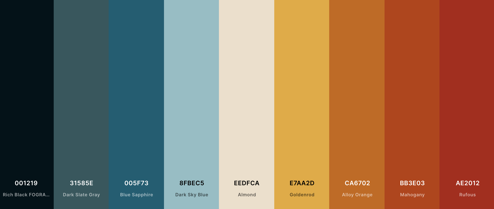

Color Palette:

The main color of the site will be
"Sky-blue: #8fbec5" and darker tint
which will be used for the background elements.
The secondary color for the site will be
Blue-Sapphire: #005f73" Which will
be used for background elements as well as some sub-headline
structures.
Accent colors include:
The key accent color will be
"goldenrod: #e7aa2d"
It will be used on elements such as Call-To-Action locations,
navigation and link hover.
"Rufous: #ae2012"
"Alloy-Orange: #ca670"
These colors will be used as accent colors, for subheader banners and
borders .
Lastly, the black that will be used is
"Rich Black FOGRA 29: #01161eff".
It will be used for body copy and various other small elements to
anchor the design and boost contrast to ensure accessibility reading
for all visitors.
Color Theory:
Compound Color Scheme
The slightly warmer, jewel tones are appealing to a wide array of audience demographics. It is colorful enough that young children will be atttracted to it, yet sophisticated enough that adults won't feel out of place engaging with it.
Color Codes:
--rich-black-fogra-29: #001219ff;--dark-slate-gray: #31585eff;
--blue-sapphire: #005f73ff;
--dark-sky-blue: #8fbec5ff;
--almond: #eedfcaff;
--goldenrod: #e7aa2dff;
--alloy-orange: #ca6702ff;
--mahogany: #bb3e03ff;
--rufous: #ae2012ff;